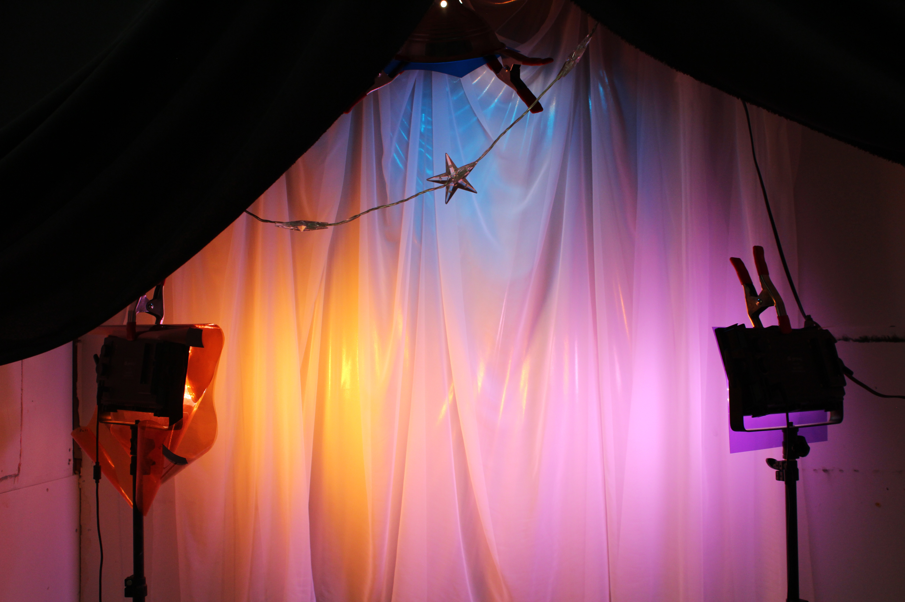

ROXIE DARLING
 For centuries and lifetimes, color has been used to uplift, steer, and change human perception. It is a powerful tool for self-identification and expression. This project aims to explore the active decision to “feel” certain colors and to “project” their vibrations throughout the world around us.
Every color has a different vibration which can manipulate our experiences.
Come to play and discover the healing properties of color:
Have specific colors projected on you to alter or enhance your aura.
Get your photo taken and share your experience with your friends through social media—help spread the word about the wonderful world of color.
The Manifest Your Aura Project is part of the Spectrum Experiment by Color Healer Roxie Darling.
#manifestyourauraproject
@spectrumexperiment
@roxiedarling